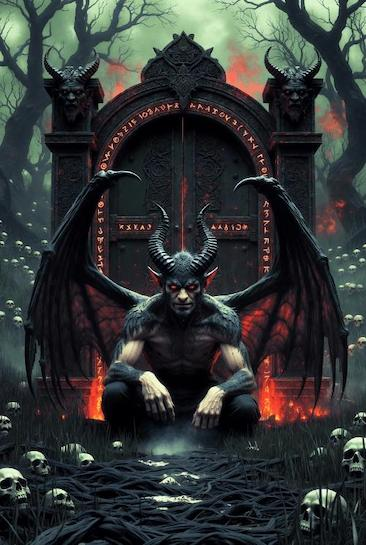

🔥 2025 — эра ИИ-генерации
В 2025 году нейросети для генерации изображений достигли уровня, когда разница между ИИ-артом и работой человека практически стёрлась. То, на что у художника ушли бы часы или дни, теперь создаётся за секунды. Это не просто инструмент — это новый язык творчества, доступный каждому.
🤖 Примеры работ разных ИИ-сетей
Вот два примера, которые показывают, насколько далеко продвинулись нейросети. Обрати внимание: эти изображения созданы в разных ИИ-сетях, но каждая демонстрирует впечатляющий результат!

Что поражает на первом изображении:
- ✅ Проработка каждого элемента архитектуры
- ✅ Живые эмоции персонажей
- ✅ Богатая цветовая палитра
- ✅ Идеальная композиция с глубиной и перспективой

Что поражает на втором изображении:
- ✅ Реалистичное освещение и тени
- ✅ Естественные текстуры бамбука
- ✅ Эффект глубины резкости
- ✅ Атмосфера спокойствия и гармонии
💡 Что это показывает?
Разные ИИ-сети — разный подход, но одинаково впечатляющий результат!
Одна специализируется на художественных иллюстрациях, другая — на фотореализме. Но обе достигли уровня, когда сложно отличить от работы человека.
🎯 Универсальность современных нейросетей
Хочешь мультик?
Анимационный стиль, Pixar, Disney — пожалуйста!
Хочешь картину?
Масло, акварель, импрессионизм — без проблем!
Хочешь фото?
Фотореализм уровня профессиональной съёмки!
Хочешь 3D?
Рендеры в стиле Unreal Engine 5!
Хочешь пиксели?
8-bit, 16-bit ретро стиль — легко!
Хочешь логотип?
Минимализм, вектор, брендинг — готово!
💰 Сколько стоит и с чем сравнивать
Стартовый пакет популярных генераторов — от $8/месяц. За эти деньги получаешь около 200 генераций в месяц и доступ ко всем функциям.
| Инструмент | Цена | Плюсы | Минусы |
|---|---|---|---|
| MidJourney | $8-60/мес | Лучшее качество, простота | Только через Discord |
| DALL-E 3 | $20/мес | Интеграция с ChatGPT | Менее художественный |
| Stable Diffusion | Бесплатно | Полный контроль, локально | Сложная установка |
| Adobe Firefly | $4.99/мес | Интеграция с Adobe | Ограниченная свобода |
Вывод: Золотая середина по соотношению цена/качество/простота.
🎪 MidJourney в реальной жизни
На одной из недавних IT-выставок команда MidJourney показала, что они не звездятся и остаются простыми ребятами. Пока другие стенды ограничивались скучными буклетами, ребята из MidJourney раздавали: бесплатное мороженое, разнообразные салаты и отличное настроение. Это показывает: коллектив MidJourney простой и земной, несмотря на мировой успех. Никакого пафоса, только творчество и технологии! 👏
🎁 Бонус: 3 мощных промта для новичков
Если зарегистрируешься в любом ИИ-генераторе, попробуй эти промты:
📸 Промт 1: Фотореалистичный портрет
professional portrait photography of a young russian entrepreneur in modern office, natural lighting, shallow depth of field, shot on Canon EOS R5, 85mm f/1.4, hyperrealistic skin texture, confident expression, minimalist background --ar 3:4
Что получится: Профессиональное фото как из журнала Forbes.
🎮 Промт 2: Концепт-арт для игры
epic fantasy landscape, floating islands connected by glowing bridges, ancient ruins overgrown with bioluminescent plants, dramatic sunset with purple and orange sky, cinematic composition, concept art style, detailed environment --ar 16:9
Что получится: Космический пейзаж уровня AAA-игр.
️ Промт 3: Логотип/брендинг
minimalist logo design for AI startup, geometric abstract symbol combining brain and circuit patterns, gradient blue to purple, clean modern style, vector illustration, white background, professional branding --ar 1:1
Что получится: Стильный логотип для стартапа.
--ar— соотношение сторон (3:4, 16:9, 1:1)- Экспериментируй с деталями!
- Чем точнее описание — тем лучше результат
🔜 В следующей статье
🎁 Готовлю подборку промтов!
В следующем материале я поделюсь проверенными промтами для генерации: портреты, иллюстрации, архитектура, концепт-арт, логотипы. Следите за обновлениями! 🔥
🚀 Хочешь попробовать ИИ без заморочек?
Все нейросети в одном окне • Карты РФ • Без VPN • Первый шаг — всего 290₽
💜 Попробовать Chad AI• Реклама • Партнёрская программа
🚀 Заключение
ИИ-генерация изображений в 2025 году — это демократизация дизайна. Инструмент, который ещё вчера был доступен только избранным профессионалам, сегодня в руках у каждого.
«Будущее уже здесь. И оно генерируется по запросу.»
Друзья пишите боту он мой, отвечу всем
🎨 Твори. Экспериментируй. Вдохновляйся.